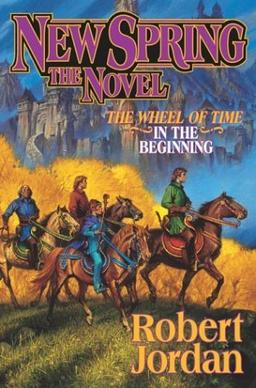

|

|
New Spring |
6 January 2004 |
New Spring describes events which take place twenty years before the events of The Eye of the World (Book 1). The story begins in the last days of the Aiel War, and the Battle of the Shining Walls around Tar Valon. It is set primarily in Tar Valon and the Borderlands, specifically Kandor.
New Spring focuses mainly on Moiraine Damodred and Siuan Sanche, two Aes Sedai new to the sisterhood, and how a young Moiraine became Aes Sedai, met Lan Mandragoran and made him her Warder.
The novel also explains how Moiraine and Siuan witnessed a prophecy of the Dragon's rebirth and came to begin investigating the Karaethon Cycle, the Prophecies of the Dragon, decades before discovering Rand al'Thor.
|

|
1. The Great Hunt |
November 15, 1990 |
The story features young heroes Rand al'Thor, Mat Cauthon, and Perrin Aybara, who join Shienaren soldiers in a quest to retrieve the Horn of Valere.
At the same time, Egwene al'Vere, Nynaeve al'Meara, and Elayne Trakand go to the White Tower in Tar Valon to learn Aes Sedai ways. Finally, an exotic army invades the western coast.
|